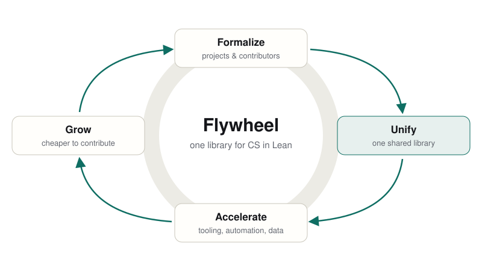

An open initiative · Lean 4
Open-source AI-for-math tooling (autoformalization agents, provers, harnesses, benchmarks, and data pipelines) and the unified, formally verified library of computer science it builds. It brings together efforts that are now running in parallel.
Agents, provers, and harnesses that formalize and prove at research scale, as open models and open code.
One coherent, machine-checked library of CS definitions, theorems, and verified algorithms.
Open evaluation sets and training data drawn from the library, so progress is measurable and reproducible.
Connects projects now running in parallel through shared conventions and interfaces.
The flywheel
AI provers improve with more formalized material to learn from and build on. A unified library gives them that material, and each result they formalize adds to it.

[TBD: partner organizations and projects.] Interested? Get in touch.